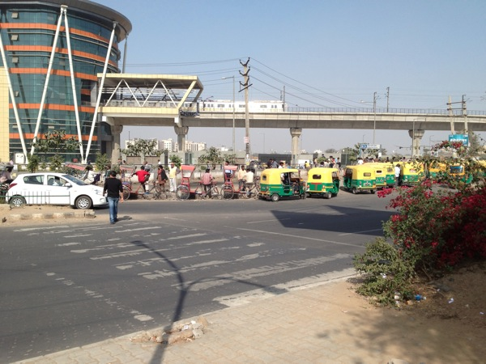
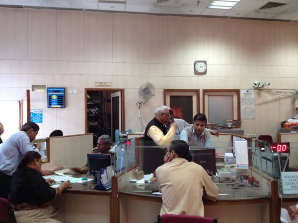
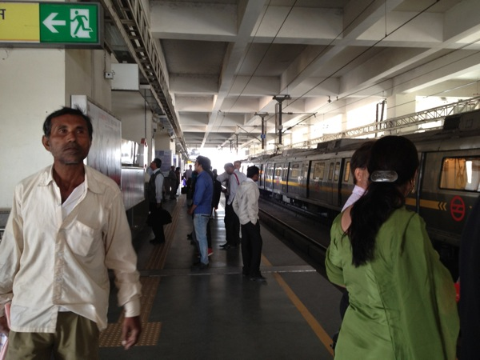
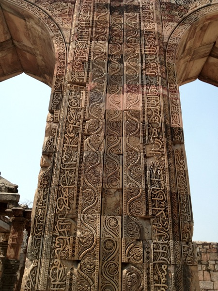
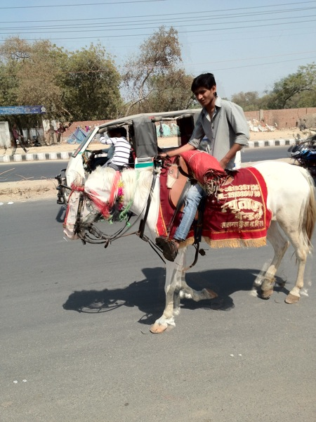
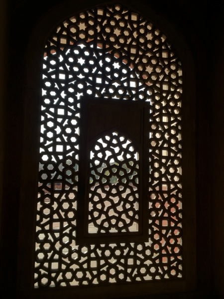
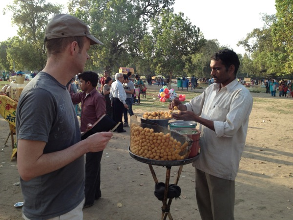
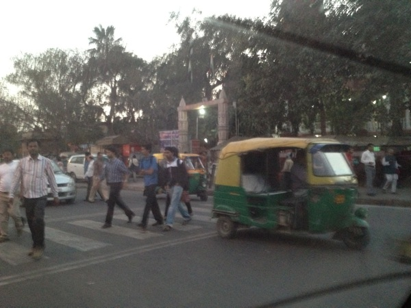

Inde Jour 1
Salut les amis,
il est 22h00 heure locale. Nous venons de revenir de dîner à l'hôtel – et nous sommes épuisés. La première journée a été immédiatement remplie de nouvelles expériences. Et cela après une nuit dans l'avion avec environ 1 heure de sommeil et un décalage horaire de 4h30 dans le mauvais sens…
Voici le court compte-rendu photo :

C'est près de notre hôtel. Typique : ultramoderne et très ancien côte à côte.
Même dans la banque, cela fonctionne comme chez nous dans les années 40.
Il y a un S-Bahn – et il est vraiment bien organisé. Nécessaire dans une ville de 21 millions d'habitants…Partout, on voit de magnifiques saris.

Ils ont des temples ici à profusion.
Dès le trajet de l'aéroport à l'hôtel, nous avons vu un éléphant sur la route. Malheureusement, je n'ai pas été assez rapide avec l'appareil photo. Mais il y a encore d'autres animaux dans la circulation...C'est la petite réplique du Taj Mahal – qui ne semble pas si petite...

…et c'est déjà très impressionnant.Ils ont aussi un Arc de Triomphe : ils l'appellent “India Gate”.

Mon collègue Christian a courageusement acheté du “Indian Bread” dans la rue. Comme d'habitude ici, extrêmement épicé. Normalement, la règle est : Si vous ne pouvez pas l'éplucher et vous ne pouvez pas le cuire – oubliez-le !Encore un temple : celui-ci est en plein centre-ville...

À Old Delhi, c'est encore plus étroit, plus bondé, plus rapide sur la route.Et voici à quoi on ressemble après une journée pleine de nouvelles impressions et de temples.
Bon, maintenant je dois aller me coucher.
Bonne nuit,
– Till.